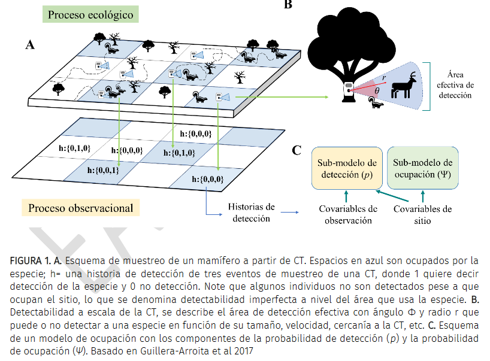

Andrade-Ponce, G., Cepeda-Duque, J. C., Mandujano, S., Velásquez-C, K. L., Lizcano, D. J., & Gómez-Valencia, B. (2021). Modelos de ocupación para datos de cámaras trampa

Resumen
El uso de las cámaras trampa (CT) en la investigación de fauna silvestre puede generar conclusiones sesgadas cuando la detectabilidad imperfecta de especies no es considerada. Herramientas analíticas como los modelos de ocupación permiten estimar simultáneamente parámetros ecológicos corregidos por la probabilidad de detección. Sin embargo, es necesario implementar e interpretar de manera correcta los parámetros estimados por estos modelos para obtener inferencias con sentido biológico. Este trabajo presenta un marco conceptual base para diseñar de manera apropiada un análisis de ocupación por medio de datos de CT. Se discuten y se señalan recomendaciones generales para la definición de los elementos del modelo, el diseño del muestreo, así como estrategias de modelamiento estadísticos apropiadas dependiendo de los objetivos del estudio, las características de la especie y el tipo de datos obtenidos. Las decisiones tomadas por el investigador para definir cada uno de los componentes del modelo deben considerar la escala adecuada para que el fenómeno de estudio tenga sentido biológico. De esta manera, es posible generar inferencias y conclusiones robustas a partir de información de CT, lo que permite avanzar en el entendimiento de los mecanismos que subyacen a la ecología espacial de fauna silvestre y por lo tanto en su conservación.
Abstract
The use of camera traps (CT) in wildlife research can lead to biased conclusions when imperfect species detectability is ignored. Analytical tools such as occupancy models allow the simultaneous estimation of ecological parameters corrected by detection probability. However,it is necessary to implement and correctly interpret the estimated parameters to obtain sound biological inferences.This work presents a conceptual framework to critically design an occupancy analysis using CT data. General recommendations are discussed and presented for the definition of model elements, the sampling design, as well as the modeling strategy depending on the objectives of the study, the characteristics of the species and the data obtained. Decisions made by researchers to define the model components must consider the appropriate scale at which the study phenomenon makes biological sense. In this way, it is possible to generate valid inferences and conclusions with CT data that allow the advance in the understanding of the mechanisms that underly wildlife spatial ecology and their conservation